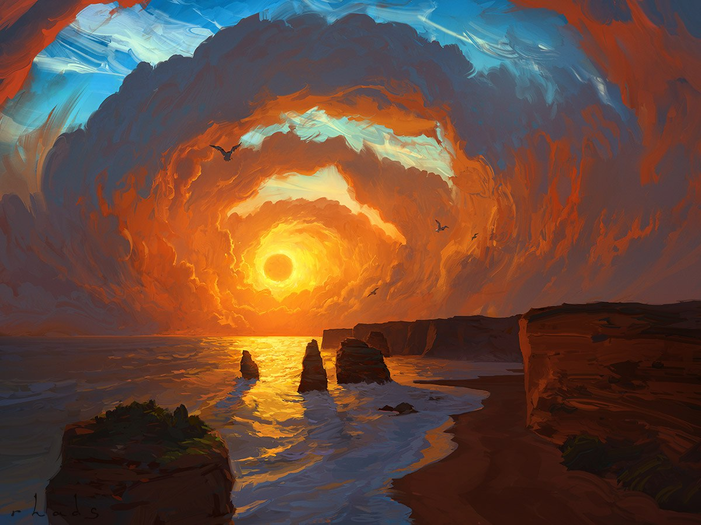

Цифровая живопись – это метод создания художественного объекта на компьютере. Использование цифровой графики интерфейса, соединяющего художника с аппаратно-программной платформой, работает с окрашенной поверхностью, не только на основе линий дизайна, но и не в общем цвете. Цифровая живопись адаптирует традиционные лакировочные материалы к цифровой версии. Он адаптирует традиционную лакокрасочную среду, такую как акриловая краска, масла, чернила, акварель и т. Д. И применяет пигмент к традиционным носителям, таким как холст, бумага, полиэстер и т. Д. С помощью компьютерных принтеров.
